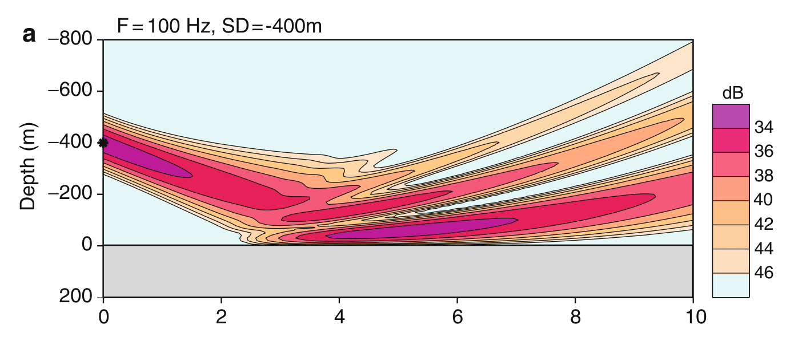

Simulação de onda acústica em meio oceânico
A equação que queremos modelar é da forma $$ \nabla^2 p + k^2 p = 0, $$ em que \(p\) é a pressão acústica em função da posição no espaço \(3D\), \(\nabla^2\) é o laplaciano, representando a propagação espacial da onda, e \(k = \dfrac{\omega}{c}\) é o número de onda, com \(c\) sendo a velocidade de propagação no meio e \(\omega\) a frequência angular.
Expandindo, a equação pode ser escrita como $$ \frac{\partial^2 p}{\partial x^2} + \frac{\partial^2 p}{\partial y^2} + \frac{\partial^2 p}{\partial z^2} + \frac{\omega^2}{c^2(x,y,z)}p =0. $$
Fazendo a mudança para coordenadas cilíndricas \((r,\phi,z)\), obtemos $$ \frac{1}{r}\frac{\partial}{\partial r} \left( r\frac{\partial p}{\partial r} \right) + \frac{1}{r^2}\frac{\partial^2 p}{\partial \phi^2} + \frac{\partial^2 p}{\partial z^2} + \frac{\omega^2}{c^2(r,\phi,z)}p =0. $$
Supondo simetria azimutal, isto é, independência da coordenada angular \(\phi\), a equação se reduz para $$ \frac{\partial^2 p}{\partial r^2} + \frac{1}{r}\frac{\partial p}{\partial r} + \frac{\partial^2 p}{\partial z^2} + k_0^2 n^2 p =0, $$ em que \(k_0=\dfrac{\omega}{c_0}\) é um número de onda de referência e \(n=\dfrac{c_0}{c(r,z)}\) é o índice de refração.
Por fim, utilizando a aproximação paraxial, que assume propagação predominantemente para frente, obtemos $$ 2ik_0\frac{\partial p}{\partial r} + \frac{\partial^2 p}{\partial z^2} + k_0^2(n^2-1)p =0, $$ que é a equação parabólica (reduzida a parâmetros da equação de Schrödinger) padrão introduzida por Hardin e Tappert [1].
Introduzindo os operadores $$ P = \frac{\partial}{\partial r}, \qquad Q = \sqrt{ n^2 + \frac{1}{k_0^2} \frac{\partial^2}{\partial z^2} }, $$ a equação elíptica pode ser escrita na forma $$ \left( P^2 + 2ik_0P + k_0^2(Q^2-1) \right)\psi = 0. $$
Fatorando a equação em uma componente de onda incidente e outra propagando-se para frente, obtemos $$ (P+ik_0-ik_0Q)(P+ik_0+ik_0Q)\psi - ik_0[P,Q]\psi =0, $$ em que $$ [P,Q]=PQ-QP $$ é o comutador dos operadores.
Para meios com dependência fraca em \(r\), assumimos que o termo de comutação pode ser desprezado. Selecionando apenas a componente propagando-se para frente, obtemos $$ P\psi = ik_0(Q-1)\psi, $$ ou equivalentemente $$ \frac{\partial \psi}{\partial r} = ik_0 \left( \sqrt{ n^2 + \frac{1}{k_0^2} \frac{\partial^2}{\partial z^2} } -1 \right)\psi. $$
O problema então se reduz ao cálculo numérico do operador $$ Q = \sqrt{ n^2 + \frac{1}{k_0^2} \frac{\partial^2}{\partial z^2} }. $$
Definindo $$ q = n^2 - 1 + \frac{1}{k_0^2} \frac{\partial^2}{\partial z^2}, $$ o operador \(Q\) pode ser escrito como $$ Q = \sqrt{1+q}. $$
Para obter uma forma numericamente tratável (essa solução funciona para soluções com variação de até 30 a 40 graus em relação a fonte de propagação [2]), utilizamos a aproximação racional de Greene [2], $$ Q \approx a_0 + \frac{a_1 q}{b_0 + b_1 q}, $$ com coeficientes $$ a_0 = 0.99987, \qquad a_1 = 0.79624, \qquad b_0 = 1.0, \qquad b_1 = 0.30102. $$
Vimos acima que a solução considerada descreve apenas propagação em uma direção. No caso da simulação, consideraremos a propagação da esquerda para a direita.
Para resolver numericamente essa equação, utilizaremos uma discretização das derivadas, em particular o método de Crank–Nicolson. A equação é escrita na forma $$ \frac{\psi^{m+1}-\psi^m}{\Delta r} = ik_0 \left( \sqrt{1+q}-1 \right) \frac{\psi^{m+1}+\psi^m}{2}. $$
Utilizando a aproximação racional de Greene e reorganizando os termos (veja [2]), obtemos os coeficientes $$ w_1 = b_0 + \frac{ik_0\Delta r}{2}(a_0-b_0), \qquad w_1^{*} = b_0 - \frac{ik_0\Delta r}{2}(a_0-b_0), $$ $$ w_2 = b_1 + \frac{ik_0\Delta r}{2}(a_1-b_1), \qquad w_2^{*} = b_1 - \frac{ik_0\Delta r}{2}(a_1-b_1). $$
A discretização em profundidade leva a um sistema linear tridiagonal, com coeficientes $$ u = -\frac{\gamma_1+\gamma_2}{\gamma_2} \frac{k_0^2(\Delta z)^2}{2} \left( \frac{w_1^{*}}{w_2^{*}}-1 \right) + \frac{k_0^2(\Delta z)^2}{2} \left[ (n_1^2-1) + \frac{\gamma_1}{\gamma_2}(n_2^2-1) \right], $$ $$ v = \frac{\gamma_1}{\gamma_2}, $$ e uma expressão análoga para \(\tilde{u}\).
Dessa forma, o problema se reduz à resolução iterativa de um sistema matricial tridiagonal da forma $$ A\psi^{m+1} = B\psi^m. $$ Em cada passo da propagação, resolvemos o sistema para obter \(\psi^{m+1}\), usando os valores de \(\psi^m\) conhecidos na posição anterior.
Ou seja, a simulação funciona como um problema de marcha: avançamos no eixo \(r\), calculando a solução em cada nova posição a partir dos valores discretizados no eixo vertical \(z\).
Além disso, a condição que determina o feixe lançado inicialmente pode funcionar com modelos distintos. Usaremos 3 fontes: Gaussiana, Greene e Gaussiana Generalizada. Para detalhes da derivação de cada, veja [2]
Por fim, também fizemos uma simulação de Divisão de Feixe, dado em 6.9.1.1 em [2].

Simulação de feixe inclinado [2] Nesse modelo, a velocidade do som aumenta com a profundidade, logo temos a tendência a subir. No modelo, o feixe aponta aproximadamente 5.28\( ^o \) para baixo, que é o ângulo mínimo para a a luz tocar o fundo. Alguns parametros podem ser ajustas na simulação abaixo.Autores
Francisco José e Maria Eduarda Martins, IMPA Tech.
Referências
[1] R.H. Hardin, F.D. Tappert, Applications of the split-step Fourier method to the numerical so- lution of nonlinear and variable coefficient wave equations. SIAM Rev. 15, 423 (1973)
[2] Jensen, F. B., Kuperman, W. A., Porter, M. B., & Schmidt, H. (2011). Computational Ocean Acoustics. In Modern Acoustics and Signal Processing.
Foi utilida IA para auxilio em algumas partes do código.
O estilo do texto seguiu o design que pode ser obtido em https://latex.vercel.app/
O style em head segue, majoritariamente, do material da Semana 01 - JS dos monitores.